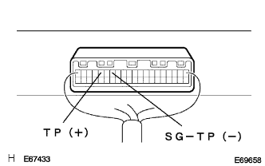
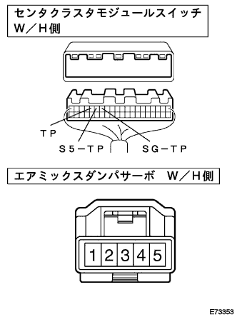

DTC RRDEF Air Mix Dampa Servo Poten Show |
| Display code | Diagnostic content
| Inspection site |
|---|---|---|
| Rrdef |
|
|
| Step 1 | Center cluster module switch single inspection (TP) |
Turn on the IG switch.
|  |
Use SST (Toyota Electrical Tester) to measure the voltage between the connector A16 (TP) terminal ← → A14 (SG-TP) terminals of the center cruster module switch.
|
| ||||
|
| ||||
| NG | |
| Step 2 | Air Mix Dampa servo SUB-ASSY Single Inspection |
Cut the connector of the Air Mix Dan Paserbo.
 |
Use SST (Toyota Electrical Tester) to measure the resistance between the connector 1 (VZ) terminal ← → 2 (GND) terminal.
Use a SST (Toyota Electrical Tester) to measure the resistance value between the connector 3 (Pt) terminal ← → 2 (GND) terminals when the arm is stopped at the Max Hot or Max Cold position.
| Arm position | Reference value |
|---|---|
| Max Hot | 4.8 ± 1.44kΩ |
| Max Cold | 1.2 ± 0.36kΩ |
Use the SST (Toyota Electrical Tester) to confirm that the resistance value between the connector 3 (PT) terminal ← → 2 (GND) of the connector at the time of the arm rotation changes continuously.
|
| ||||
| OK | |
| Step 3 | Wire harness or connector inspection (Senta Cluster Module Switch-Air Mix Dan Passerbo) |
Cut the connector of the center cruster module switch.
|  |
Use SST (Toyota Electrical Tester) to inspect the conduction and GND short (short circuit) between each connector terminal of the vehicle wire harness.
| Senta Cluster Module Switch side Terminal number (terminal symbol) | Air Mix Dan Paserbo side Terminal number |
|---|---|
| A15 (S5-TP) | 1 |
| A14 (SG-TP) | 2 |
| A16 (TP) | 3 |
|
| ||||
| OK | ||
| ||